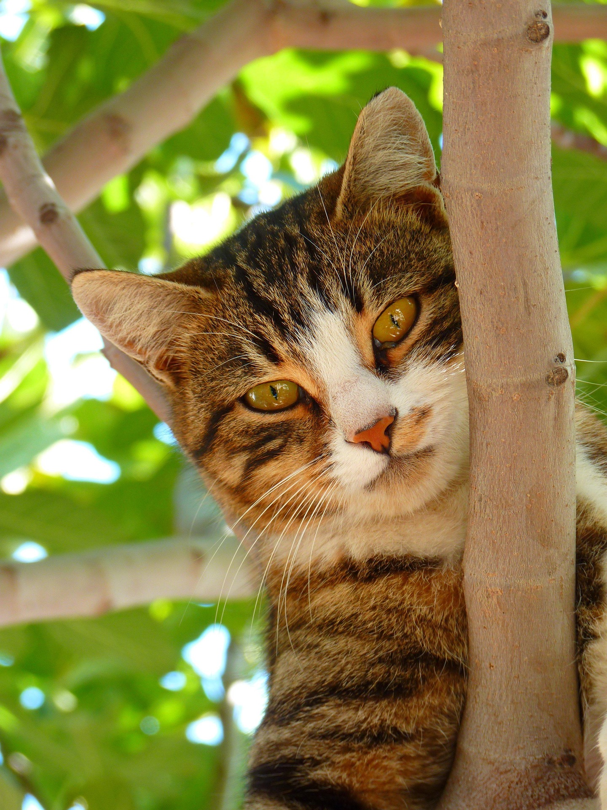
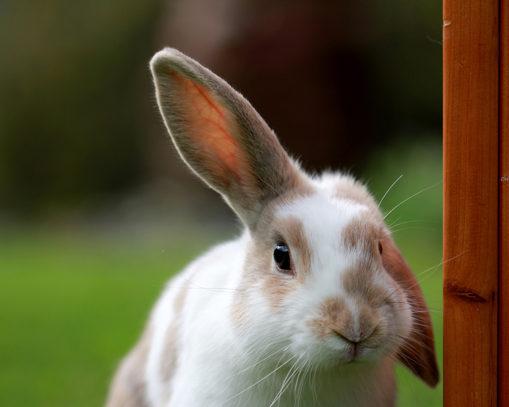
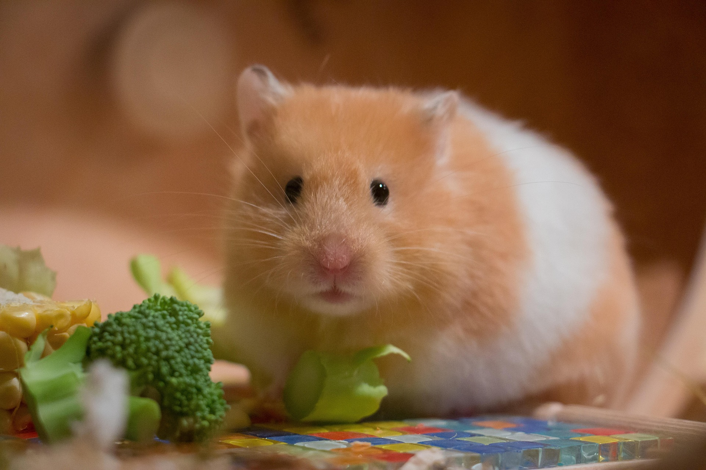

Mundo Animal
Un espacio para conocer y cuidar a nuestros animales
Bienvenidos a Mundo Animal, un blog dedicado a los animales domésticos y a la importancia de brindarles amor, cuidado y un hogar seguro.

Bienvenidos a Mundo Animal, un blog dedicado a los animales domésticos y a la importancia de brindarles amor, cuidado y un hogar seguro.
Los animales domésticos forman parte de muchas familias. Cada uno tiene diferentes características, necesidades y formas de relacionarse con las personas.
Los perros son animales muy sociables y pueden convertirse en grandes compañeros. Necesitan una alimentación adecuada, ejercicio, higiene y mucho cariño.

Los gatos son animales independientes, curiosos y cariñosos. Para mantenerlos saludables necesitan una buena alimentación, un espacio limpio y atención veterinaria.

Los conejos son animales tranquilos y sensibles. Necesitan una alimentación adecuada, espacio para moverse y un ambiente limpio y seguro.

Los hámsteres son pequeños animales que requieren cuidados especiales. Es importante proporcionarles una alimentación equilibrada, agua y un espacio adecuado para vivir.
